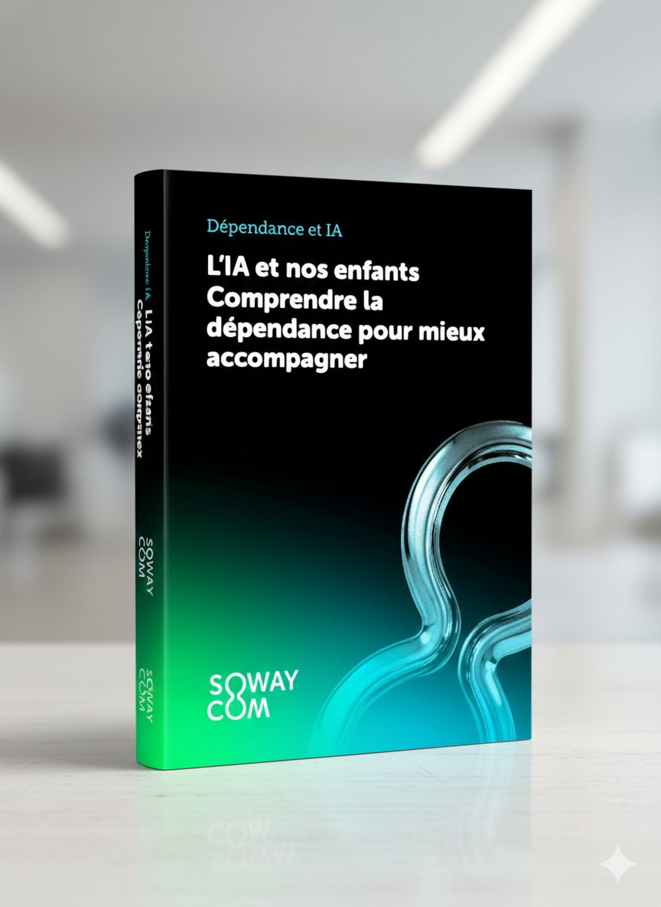

Le premier guide francophone qui décrypte les mécanismes de dépendance à l'IA chez les enfants et adolescents — et vous donne les clés concrètes pour accompagner sans interdire.

« L'IA ne crie pas, ne juge pas, ne se fatigue jamais.
Elle répond instantanément, s'adapte au langage de l'enfant, reformule, encourage, rassure… »
Contrairement aux écrans classiques, l'IA générative simule une relation humaine. Pour un enfant en pleine construction identitaire, c'est un mécanisme de dépendance d'une nature inédite. Ce guide vous explique pourquoi — et surtout, comment agir.
Le problème
Quand un enfant demande à l'IA de réfléchir à sa place, son muscle de raisonnement s'atrophie. Moins on l'utilise, moins on sait l'utiliser.
L'IA ne contredit jamais, ne se fatigue jamais, n'impose aucune limite. L'enfant s'y attache comme à un compagnon — sans réciprocité réelle.
Snapchat My AI, ChatGPT, Copilot… L'IA est déjà dans la poche de votre enfant. Sans que vous le sachiez, les conversations s'accumulent.
La prohibition crée la fascination. Ce guide propose une troisième voie : comprendre les mécanismes pour accompagner avec discernement.
Ce que vous allez découvrir
Pas de jargon technique. Des explications claires, des données scientifiques accessibles, et des actions concrètes.
Comment le design conversationnel de l'IA active les circuits de récompense du cerveau — décryptage accessible avec sources scientifiques (COMEST, MIT, études 2024).
Snapchat My AI, ChatGPT, Copilot, Character.ai… Tour d'horizon des outils, de leurs risques spécifiques et de ce qu'ils collectent.
Les comportements qui doivent vous alerter, l'anthropomorphisme comme terrain fertile, et les profils d'enfants les plus vulnérables.
Un framework actionnable pour les parents et les enseignants : clarifier, encadrer, éduquer à l'esprit critique, et donner l'exemple.
Comment apprendre à votre enfant à utiliser l'IA comme un brouillon, un assistant de recherche, un accélérateur — sans jamais remplacer sa propre réflexion.
Ce qui se joue aujourd'hui avec l'intelligence artificielle est d'une tout autre nature. Ce qui la distingue des technologies précédentes, ce n'est pas seulement sa rapidité, mais sa capacité à simuler une relation. Elle n'est ni impatiente, ni critique. Pour un enfant en pleine construction, c'est un ami de substitution toujours accessible.Virginie Maggiol — Psychologue, diplômée de l'Université Paris V — René Descartes
Ils ont été formés par Sylvain
« Pédagogie, apport de connaissances et mise en pratique caractérisent nos 3 jours de formation sur l'IA dispensés par Sylvain. Il a su adapter ses interventions aux spécificités des services du secteur social et médico-social. »
Téléchargement gratuit
32 pages de décryptage, de données scientifiques et d'actions concrètes. Gratuit, sans engagement. Parce qu'un parent ou un enseignant informé est le meilleur rempart.